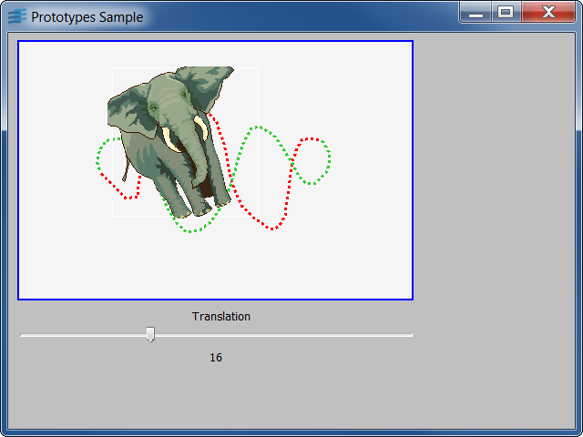

Custom Accessor Creation and UseShows how to define a new class of accessors.
The new accessor class is IlvGraphicPathAccessor, and can be used in
a prototype to move an object along a graphic path (defined by a set
of polylines). When the value of the accessor is changed, the object
is moved on the graphic path to a percentage of the total length of
the path.
The class IlvGraphicPathAccessor is declared in the C++ file gpacc.h
and defined in gpacc.cpp.
The program gppanel shows an example of use of the class
IlvGraphicPathAccessor: the panel contains a slider gadget connected
to an instance of a prototype representing an object moving along a
graphic path. When the user moves the slider, the object moves along
the path accordingly.
IlvUserAccessorIlvGroupExtending Studio to Use a Custom AccessorShows how to integrate a new class of accessors in Studio, if you have the 2D Controls module of Views.
The gpstudio is a version of Studio linked with the
IlvGraphicPathAccessor class. When you use gpstudio to edit prototypes,
the new graphic path accessor class appears automatically as a new
action in the Action combo box of the Accessors page of the
Prototype Inspector. To see it:
data/bunnypan.ilv,grpath in the Prototypes palette,IlvStExtensionIlvStudio